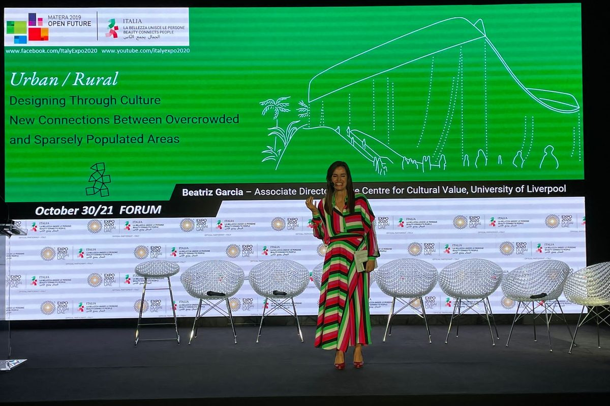
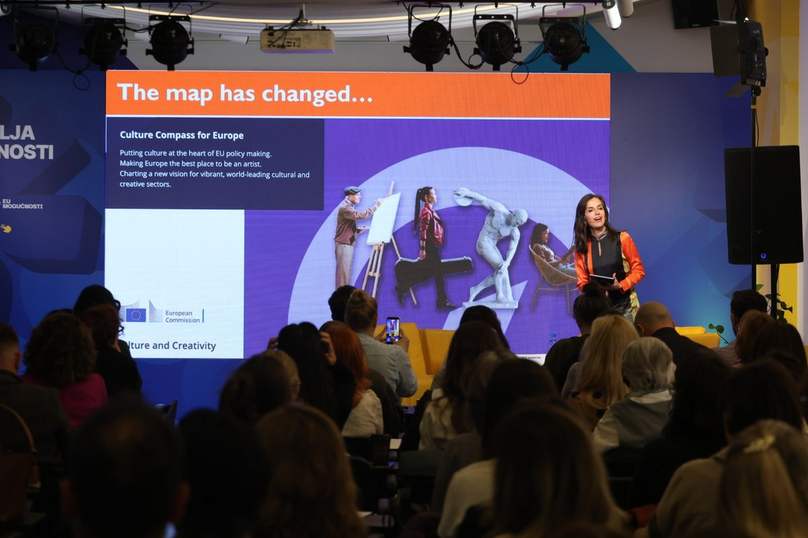
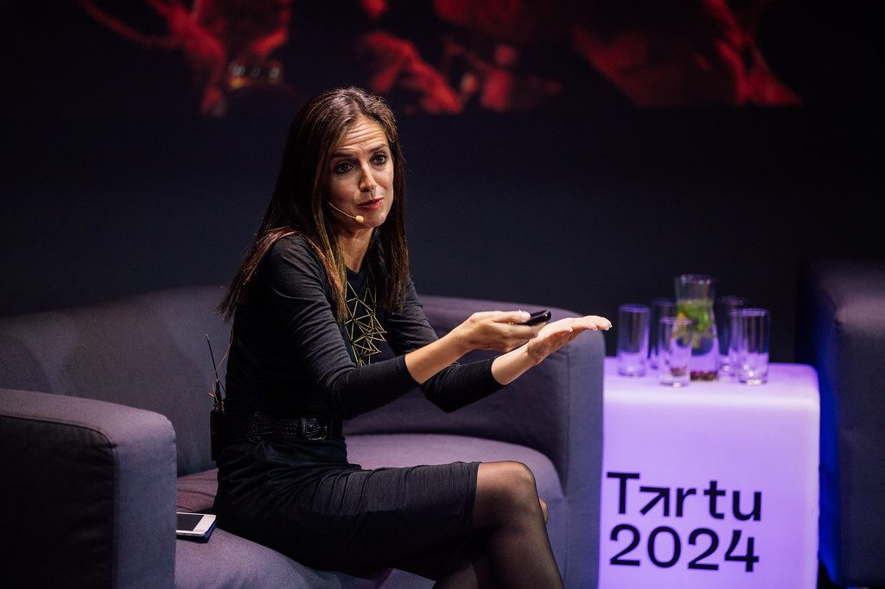
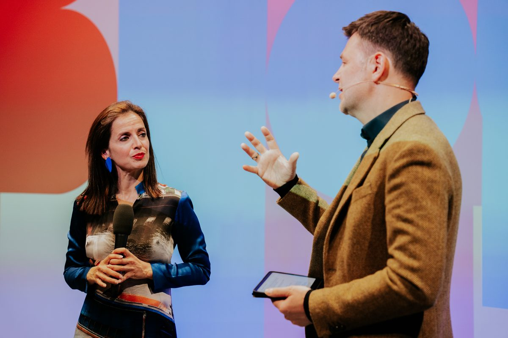
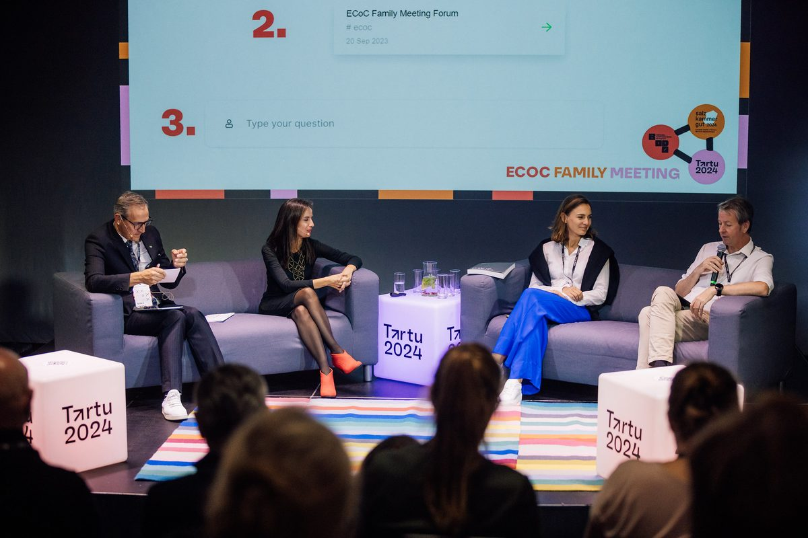
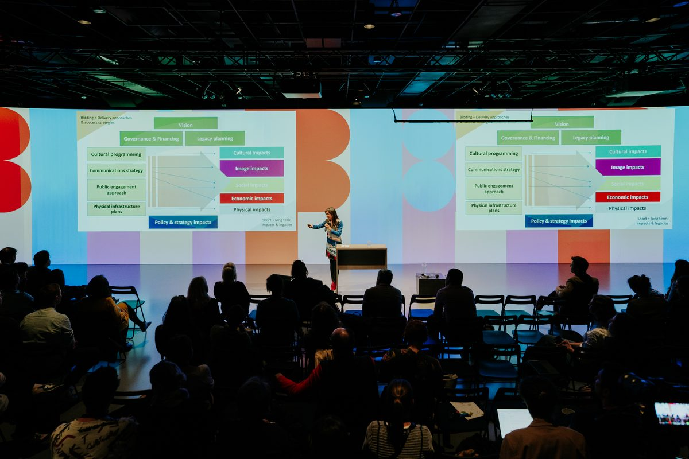

The Counting Trap
Why the most valuable things culture does for a city are the hardest to count, and how to capture them anyway.
For city leaders, funders, evaluators and destination bodies
Speaking
More than 300 invited talks in 45 countries, on what culture does for the cities that host the world's biggest events.
Dr Beatriz García
Founder, Beatriz García Research & Advisory — mega events, cities and culture
Member, Culture and Olympic Heritage Commission, International Olympic Committee
Senior Research Fellow, Mega Events & Cultural Policy, University of Liverpool
Each can be a keynote, a keynote plus workshop, or a masterclass
Why the most valuable things culture does for a city are the hardest to count, and how to capture them anyway.
For city leaders, funders, evaluators and destination bodies
What the Olympic Games and the Capitals of Culture still give cities, and what they must stop doing to deserve them.
For organising committees, host cities, sports business and governments
Can joy make a city more tolerant? Collective celebration as civic infrastructure, and how to design for it.
For festivals, placemaking and real estate, ideas festivals
Culture as a sector to fund, or the ground everything else in a city grows from.
For ministries, mayors, urban developers and strategy teams
European Parliament · European Commission · Council of Europe · EU Council Presidencies of Greece and Hungary · UNESCO Creative Cities Network · Mondiacult 2025 · UCLG Culture Summit · IFACCA World Summit on Arts and Culture · Ibero-American General Secretariat · British Council · Europe House Belgrade · UK Department for Culture, Media and Sport · Scottish Government · Generalitat de Catalunya · Global Summit on the Creative Economy, Turkish Government and EU
International Olympic Committee · International Olympic Academy, Ancient Olympia · National Olympic Academies · Olympic Games Research Fora · London 2012 Organising Committee · Commonwealth Games · World Expo · Universal Forum of Cultures · World Design Capitals · Art Biennials · SportAccord · Host City conferences
NetworksECoC Family · Culture Next · European Network of Capitals of Culture
EditionsMost ECoC host cities since 2006, including preparation, event and legacy yearsGlasgow 1990 · Brussels & Helsinki 2000 · Genoa & Lille 2004 · Liverpool & Stavanger 2008 · Vilnius & Linz 2009 · Istanbul & Essen for the Ruhr 2010 · Marseille-Provence 2013 · Umeå 2014 · Aarhus 2017 · Valletta 2018 · Rijeka & Galway 2020 · Kaunas 2022 · Tartu & Bodø 2024 · Nova Gorica & Chemnitz 2025 · Oulu 2026 · Évora 2027 · Lublin 2029 · Nikšić 2030 · and Hull, UK City of Culture 2017
Salzburg Global Seminar · Victoria and Albert Museum · Royal Society of Arts · British Academy · Edinburgh International Culture Summit · Creative Prague · LUCI, Fête des Lumières · Forum d'Avignon · Ravello Lab, A Soul for Europe · Culture Action Europe · Eurocities · ENCATC · European Broadcasting Union · Battle of Ideas · Westminster Media Forum · Royal Town Planning Institute · UK Evaluation Society · International Festival of Business, Liverpool · A to Z Sofia Jazz Festival · ArtGames, Montreal · VisitScotland National Events Conference
Ohio State University · University of Oxford · University of Chicago · University of Toronto · University of Lausanne · University of São Paulo · Birkbeck, University of London · University of East London · University of Greenwich · University of Liverpool · Liverpool John Moores University · University of Stavanger · University of Jyväskylä · Université de Grenoble · National Taiwan Normal University · Kinneret College









In English, Spanish, Catalan or French.
Tell us the date, city, audience and format. Fees and availability on request. Speaker bureaus welcome.
Past talks archive